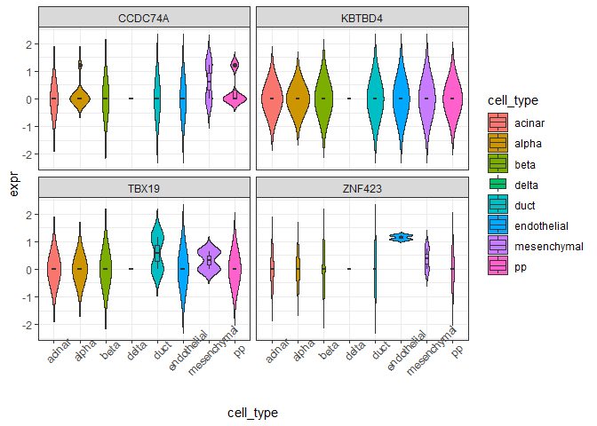
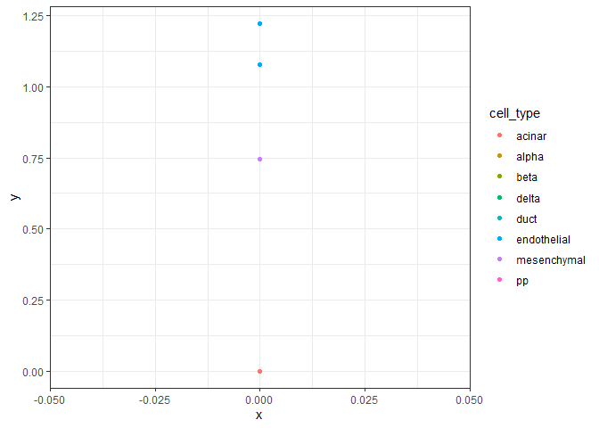

The goal of gepabds is to provide tools for analyzing and visualizing gene expression patterns in single-cell RNA-seq data. It enables per-group expression summaries, gene specificity scoring, and visualization of marker genes using datasets.
Installation
You can install the development version of gepabds from GitHub with:
install.packages("remotes")
#> Installing package into 'C:/Users/mvijayan/AppData/Local/R/win-library/4.5'
#> (as 'lib' is unspecified)
#> package 'remotes' successfully unpacked and MD5 sums checked
#>
#> The downloaded binary packages are in
#> C:\Users\mvijayan\AppData\Local\Temp\Rtmpe0TRJx\downloaded_packages
remotes::install_github("lvmedha/gepabds")
#> Using GitHub PAT from the git credential store.
#> Downloading GitHub repo lvmedha/gepabds@HEAD
#> These packages have more recent versions available.
#> It is recommended to update all of them.
#> Which would you like to update?
#>
#> 1: All
#> 2: CRAN packages only
#> 3: None
#> 4: S7 (0.2.1 -> 0.2.1-1) [CRAN]
#>
#> S7 (0.2.1 -> 0.2.1-1) [CRAN]
#> Skipping 4 packages not available: SummarizedExperiment, SingleCellExperiment, scuttle, scRNAseq
#> Installing 1 packages: S7
#> Installing package into 'C:/Users/mvijayan/AppData/Local/R/win-library/4.5'
#> (as 'lib' is unspecified)
#>
#> There is a binary version available but the source version is later:
#> binary source needs_compilation
#> S7 0.2.1 0.2.1-1 TRUE
#> installing the source package 'S7'
#> Warning in i.p(...): installation of package 'S7' had non-zero exit status
#> ── R CMD build ────────────────────────────────────────────────────────────────────────────────────────────
#> checking for file 'C:\Users\mvijayan\AppData\Local\Temp\Rtmpe0TRJx\remotesa24830b115da\lvmedha-gepabds-525cb12/DESCRIPTION' ... ✔ checking for file 'C:\Users\mvijayan\AppData\Local\Temp\Rtmpe0TRJx\remotesa24830b115da\lvmedha-gepabds-525cb12/DESCRIPTION' (718ms)
#> ─ preparing 'gepabds':
#> checking DESCRIPTION meta-information ... checking DESCRIPTION meta-information ... ✔ checking DESCRIPTION meta-information
#> ─ checking for LF line-endings in source and make files and shell scripts (577ms)
#> ─ checking for empty or unneeded directories
#> ─ building 'gepabds_0.0.0.9000.tar.gz'
#>
#>
#> Warning: package 'gepabds' is in use and will not be installed
library(gepabds)
library(SingleCellExperiment)
data(example_se)
# safe genes
genes <- rownames(example_se)[1:4]
# 1. Expression statistics
stats <- compute_expr_stats(example_se, genes)
head(stats)
#> gene cell_type mean_expr median_expr detection_rate n_cells
#> 1 KBTBD4 mesenchymal 0 0 0 2
#> 2 KBTBD4 beta 0 0 0 3
#> 3 KBTBD4 acinar 0 0 0 6
#> 4 KBTBD4 pp 0 0 0 4
#> 5 KBTBD4 alpha 0 0 0 10
#> 6 KBTBD4 endothelial 0 0 0 2
# 2. Gene specificity
spec <- compute_gene_specificity(example_se, genes)
spec
#> gene gini_score top_group top_mean
#> 2 ZNF423 0.8138737 endothelial 1.1493168
#> 4 TBX19 0.7869893 duct 0.5766949
#> 3 CCDC74A 0.7427944 mesenchymal 0.6169727
#> 1 KBTBD4 0.0000000 acinar 0.0000000
# 3. Long-format data
expr_long <- build_expr_long(example_se, genes)
# 4. Plots
plot_violin(expr_long)
#> Warning: Groups with fewer than two datapoints have been dropped.
#> ℹ Set `drop = FALSE` to consider such groups for position adjustment purposes.
#> Groups with fewer than two datapoints have been dropped.
#> ℹ Set `drop = FALSE` to consider such groups for position adjustment purposes.
#> Groups with fewer than two datapoints have been dropped.
#> ℹ Set `drop = FALSE` to consider such groups for position adjustment purposes.
#> Groups with fewer than two datapoints have been dropped.
#> ℹ Set `drop = FALSE` to consider such groups for position adjustment purposes.
plot_scatter(example_se, genes[1], genes[2])